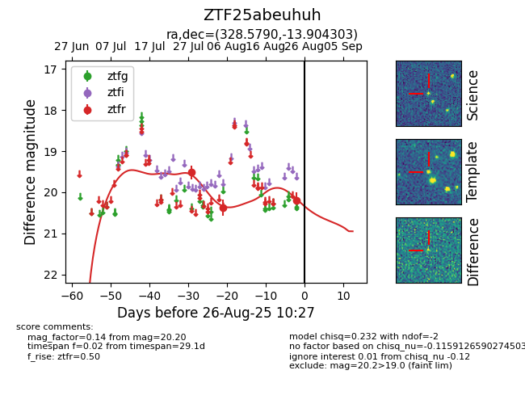

Target ZTF25abeuhuh at 2025-08-26 10:27, see:
FINK: fink-portal.org/ZTF25abeuhuh
Lasair: lasair-ztf.lsst.ac.uk/objects/ZTF25abeuhuh
ALeRCE: alerce.online/object/ZTF25abeuhuh
alt names
ZTF25abeuhuh (ztf,fink)
coordinates:
equatorial (ra, dec) = (328.5790,-13.90430)
galactic (l, b) = (41.5755,-46.72508)
photometry
last ztfr=20.20
3 ztfr detections
